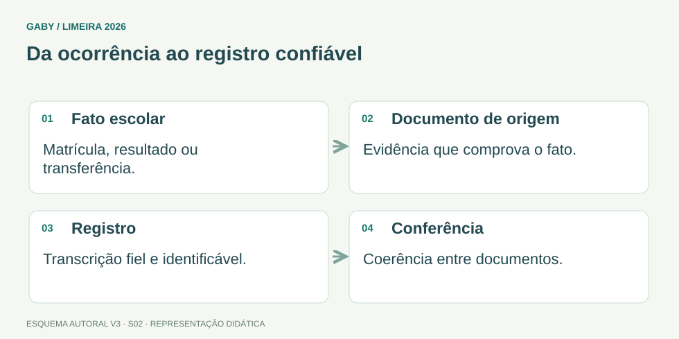

Objetivos do módulo
- Entender o conceito e a finalidade da escrituração escolar.
- Reconhecer princípios de exatidão, autenticidade, legibilidade, segurança e rastreabilidade.
- Relacionar registros a matrícula, frequência, avaliação e conclusão.
- Saber como agir diante de erros, divergências e retificações.
- Definir escrituração escolar (registro sistemático), sua finalidade, sua abrangência e o setor responsável.
- Distinguir documentos individuais e coletivos e conhecer o diário de classe, a ata e o livro de atas.
- Conhecer a rotina de vida escolar do manual da SEDUC-SP, referência da rede estadual paulista, sem tratá-la como norma municipal.
- Diferenciar regularização de vida escolar e convalidação de estudos e aplicar a LDB, arts. 12 e 24, VI e VII.
Da ocorrência ao registro confiável

Descrição em texto do esquema
- Fato escolar: Matrícula, resultado ou transferência.
- Documento de origem: Evidência que comprova o fato.
- Registro: Transcrição fiel e identificável.
- Conferência: Coerência entre documentos.
Oficina visual · aplique o esquema
A data de nascimento está diferente na ficha e no histórico. Qual deve ser a primeira providência?
Atividade autoral complementar da V3. Registre sua resposta; a resolução está no arquivo de gabarito e revisão.
Mapa do conteúdo
- 1. O que é escrituração escolar
- 2. Princípios práticos dos registros
- 3. Fontes e conferência
- 4. Erros, rasuras e retificações
- 5. Relação entre documentos
- 6. Documentos individuais e coletivos; atas
- 7. Diário de classe e rendimento escolar
- 8. Rotina da secretaria no manual paulista
- 9. Regularização de vida escolar e convalidação
- 10. LDB: dispositivos da escrituração
1. O que é escrituração escolar
Escrituração escolar é o conjunto de registros formais que documenta fatos relativos à vida escolar dos alunos e ao funcionamento da unidade. Ela produz evidência administrativa e jurídica do que ocorreu: matrícula, frequência, resultados, transferências, progressão, conclusão e demais atos escolares.
Não se trata apenas de “preencher papel”. A escrituração deve permitir que outra pessoa, posteriormente, compreenda o histórico do aluno e verifique a regularidade dos atos praticados.
Definição usada nas provas
O manual de vida escolar da Secretaria da Educação do Estado de São Paulo (SEDUC-SP, edição de 2020) define: “A escrituração escolar é o registro sistemático de todos os fatos relativos à instituição de ensino e tem por finalidade assegurar, a qualquer tempo, a regularidade e autenticidade da vida escolar do estudante e do funcionamento da instituição.” (p. 12). É a definição que as bancas mais usam.
Cada parte da definição
| Expressão | O que significa | Erro comum |
|---|---|---|
| Registro sistemático | Feito de forma contínua, organizada e segundo regras, à medida que os fatos acontecem. | Chamar o registro de eventual, aleatório ou feito só no fim do ano. |
| Todos os fatos relativos à instituição | Não só notas: matrícula, frequência, transferências, resultados, atas de reunião, atos de funcionamento da escola. | Reduzir a escrituração a finanças, eventos ou disciplina. |
| A qualquer tempo | O registro precisa provar o fato hoje ou daqui a décadas, quando o ex-aluno pedir um documento. | Achar que o registro só importa durante o ano letivo. |
| Regularidade | Os atos seguiram as regras: matrícula na série certa, frequência mínima, avaliação, conclusão. | Confundir regularidade com rapidez. |
| Autenticidade | O registro é verdadeiro, tem origem conhecida e foi feito por quem tinha competência. | Tomar carimbo ou boa impressão como prova de autenticidade. |
| Funcionamento da instituição | A escola também precisa provar que funcionou regularmente: autorização, calendário, matriz curricular, atas. | Pensar que a escrituração trata só do aluno. |
Abrangência: estudantes, servidores e a própria escola
Segundo o mesmo manual (p. 12), os registros servem de documentos comprobatórios de três campos:
- trajetória escolar dos estudantes: matrícula, frequência, avaliação, transferência e conclusão;
- vida funcional dos servidores que atuam na escola: por exemplo, o prontuário individual do professor, com a habilitação para lecionar, e o livro de ponto docente, que o manual lista entre os documentos conferidos pela supervisão (p. 89);
- a própria instituição: fatos do funcionamento da escola, como atos de autorização, calendário escolar, quadro de horários e atas de reunião.
Abrangência não é coleta indiscriminada. Só entra o fato pertinente à escola que precisa de prova; boato, comentário anônimo ou vida particular de pessoas sem relação com a escola não são escrituração.
Setor responsável e ordem dos registros
O setor responsável pela escrituração escolar é a secretaria da escola. Cabe a ela registrar as ocorrências “de acordo com a ordem e sequência dos acontecimentos” (manual SEDUC-SP, p. 12), para que os registros comprovem a trajetória do estudante, a vida funcional dos servidores e a própria instituição. Coordenação pedagógica, conselho de escola e supervisão têm outros papéis: tomam decisões que a secretaria registra, mas não a substituem na escrituração.
- Data efetiva do fato: o registro mostra quando o fato aconteceu. Se uma transferência ocorreu em 12/04 e só foi digitada em 20/05, a data da transferência continua sendo 12/04. A ordem do trabalho interno (quem digita, em que ordem separar as fichas) pode mudar; a data do fato, não.
- Continuidade: a vida escolar começa na matrícula, e o registro acompanha todo o percurso (manual, p. 12). Registrar só o ingresso e deixar de lado os fatos seguintes quebra o caráter sistemático.
- Encadeamento: se falta um fato entre dois registros (por exemplo, a classificação que explica por que o aluno está no 5º ano), apura-se e registra-se esse fato com o seu documento. Nunca se inventa uma ocorrência “plausível” nem se reordenam datas reais.
- Contexto: cada informação precisa estar ligada ao estudante, ao período e ao fato. Uma nota solta, sem aluno nem bimestre, não comprova nada.
Atender prontamente
Alguns enunciados completam a definição dizendo que compete à unidade escolar organizar a escrituração para atender, prontamente, às solicitações de informações e esclarecimentos. A ideia decorre da finalidade: se o registro deve provar fatos a qualquer tempo, ele precisa estar organizado e atualizado para responder sem demora a um pedido de declaração, a uma transferência ou a uma consulta da supervisão. Registro acumulado para o fim do ano, ou guardado sem ordem, impede esse atendimento.
O que os registros escolares comprovam
Pelos registros da vida escolar verificam-se, por exemplo:
- o direito à matrícula do candidato no ano ou série pretendido, pela transferência, pelo histórico ou pela classificação registrada;
- o desenvolvimento da aprendizagem do aluno, pelos resultados e pela frequência lançados;
- a regularidade da vida escolar: se cada etapa foi cursada e concluída conforme as regras.
Seleção e contratação de professores e concessão de licenças são atos de gestão de pessoal: são decididos pelos órgãos de pessoal e registrados nos assentamentos funcionais. A escrituração guarda documentos da vida funcional de quem trabalha na escola, mas os registros da vida escolar do aluno não servem para verificar contratação nem licença.
2. Princípios práticos dos registros
Esses princípios valem para registros físicos e eletrônicos. Digitalizar não elimina responsabilidade: muda o suporte, mas não a necessidade de confiabilidade.
| Princípio | Aplicação |
|---|---|
| Exatidão | O registro deve corresponder ao fato/documento de origem. |
| Legibilidade | Informação precisa ser compreensível. |
| Integridade | Não omitir elementos relevantes nem alterar conteúdo de forma indevida. |
| Rastreabilidade | É possível identificar origem, sequência e eventual correção. |
| Segurança | Proteger contra perda, acesso indevido e alteração não autorizada. |
| Atualidade | Registros devem ser lançados e atualizados no momento adequado. |
3. Fontes e conferência
Antes de registrar, o secretário deve conferir documentos e dados: nomes, datas, identificação, escola de origem, série/ano, resultados, carga horária e demais informações exigidas. Divergências devem ser tratadas pelos procedimentos oficiais, não corrigidas informalmente por conveniência.
A regra de ouro é: registro deve ser sustentado por fonte verificável. Quando houver retificação, deve existir forma de demonstrar o que foi corrigido e por quê.
Fidedignidade: fato, fonte e registro
Fidedigno é o registro digno de fé: há correspondência entre o fato, o documento de origem e o que foi transcrito. O manual da SEDUC-SP usa essa ideia ao tratar do rendimento escolar, cujo lançamento correto é necessário “para que se tenham dados fidedignos” sobre a situação de cada estudante (p. 15). A secretaria não decide matéria pedagógica: registra fielmente a decisão de quem tem competência (professor, conselho de classe, direção) e não cria decisão diferente ao transcrever.
| Situação | Conduta correta | Por quê |
|---|---|---|
| A data de nascimento da ficha difere da certidão. | Vale a certidão; corrigir a ficha de forma rastreável. | O cadastro segue a documentação civil. |
| O professor ainda não apurou um resultado. | Manter a pendência identificada e encaminhá-la a quem compete. | Dado ausente não vira zero, nota máxima nem nota de outro aluno. |
| O documento tem carimbo e boa impressão, mas o conteúdo diverge das fontes. | Apurar a divergência. | Aparência formal não prova conteúdo. |
| A taxa de aprovação da turma está certa, mas há notas lançadas em alunos trocados. | Corrigir cada registro individual. | Total certo não torna regulares os registros individuais. |
| Um dado ficou desatualizado por fato novo comprovado (ex.: novo endereço com comprovante). | Atualizar só o campo pertinente, com base no documento. | Atualizar faz parte da rotina; alterar campos sem relação, não. |
| Comunicado interno informa movimentação diferente da registrada. | Apurar qual versão corresponde ao fato documentado. | Mensagem informal não revoga registro, e o registro também pode ter erro. |
| Lançar participação em transporte escolar ou programa de renda. | Lançar a informação conferida, conforme a situação real. | Marcar por presunção ou por semelhança com um irmão cria dado falso. |
4. Erros, rasuras e retificações
Em documentação oficial, apagar vestígios ou “maquiar” erro pode comprometer autenticidade. O procedimento adequado depende do sistema, do suporte e das normas locais, mas deve preservar histórico e permitir auditoria.
Em sistemas digitais, perfis de acesso, logs e trilhas de alteração ajudam a demonstrar autoria e data da modificação. Em registros físicos, seguem-se os procedimentos formais previstos nas normas da rede.
Rasuras, emendas e segunda via
Para o histórico escolar, o manual da SEDUC-SP (p. 100) orienta: as informações de documentos anteriores (nomes das disciplinas, carga horária, observações) são transcritas fielmente; o documento não deve conter emendas nem rasuras; e a 2ª via gerada manualmente deve ser cópia fidedigna da primeira, com a nomenclatura das disciplinas da época e a indicação “2ª via” no alto.
Por isso, erro em documento oficial não se resolve escrevendo por cima, raspando ou cobrindo o texto: segue-se o procedimento formal de retificação da rede, que deixa claro o que foi corrigido, quando, por quem e com base em qual documento.
Possível irregularidade: informar a direção
Entre as tarefas da secretaria, o manual (p. 10, item VII) inclui informar à Direção da Escola sobre possíveis irregularidades encontradas em documentos escolares. O servidor não oculta o fato, não “conserta” o documento por conta própria e não declara fraude antes da apuração. Ao comunicar a direção, separe:
- o que foi constatado (o fato observado e em qual documento);
- as fontes já conferidas;
- o que ainda depende de verificação.
Se houver dúvida sobre a autenticidade de documento recebido de outra escola, o manual (p. 95) prevê que a escola oficie a Diretoria de Ensino da escola que teria emitido o documento, pedindo a verificação. Comprovada a inautenticidade, quem apresentou o documento é chamado a se manifestar, com garantia de ampla defesa, antes da portaria de anulação.
5. Relação entre documentos
Ficha individual, diário/registro de classe, sistema de notas, histórico e ata de resultados finais precisam ser coerentes. Quando o mesmo fato aparece em documentos diferentes, divergências são sinal de alerta.
Uma boa secretaria realiza conferência cruzada antes de expedir documentos, especialmente histórico escolar, declarações e transferência.
6. Documentos individuais e coletivos; atas
O critério que separa os dois grupos é a quem o registro se refere. Documentos individuais acompanham o percurso de um único estudante (ou de um único servidor). Documentos coletivos registram fatos, resultados e decisões de uma turma ou da escola inteira. Classificar por “pedagógico × administrativo” ou pela frequência de uso é erro: o histórico tem valor administrativo e a ata de resultados tem conteúdo pedagógico.
| Grupo | Documento | O que registra |
|---|---|---|
| Individual | Ficha cadastral | Preenchida no ato da matrícula: dados pessoais do estudante e, se veio por transferência, a escola de origem; inscreve o estudante no quadro discente (manual SEDUC-SP, p. 13). |
| Individual | Ficha de registro individual | Registro da vida escolar de cada aluno; nela se anotam, por exemplo, adaptações de estudos e convalidações (manual, p. 39 e 89). |
| Individual | Prontuário | Pasta do estudante com os documentos da matrícula (cópias de certidão, RG, comprovante de endereço, transferência) e dos procedimentos de vida escolar (manual, p. 10, 12 e 23). |
| Individual | Histórico escolar | Informa e comprova resultados parciais e/ou finais dos estudos; é emitido na transferência e na conclusão de curso (manual, p. 100). |
| Coletivo | Livro de matrícula (ou congênere) | Matrículas da escola; o manual o lista entre os documentos que mostram a trajetória dos estudantes (p. 89). |
| Coletivo | Diário de classe | Frequência, aproveitamento e conteúdo lecionado da turma em cada dia letivo (seção 7). |
| Coletivo | Ata de resultados finais | Resultado final de todos os alunos da turma no período; o manual manda averbar nela a convalidação de estudos (p. 89). |
| Coletivo | Livro de atas | Atas das reuniões da escola, em ordem. |
| Coletivo (vida funcional) | Livro de ponto docente | Frequência dos professores (manual, p. 89). |
Os grupos se completam: a ficha individual e o histórico de um aluno precisam bater com o diário, a ata de resultados finais e o livro de matrícula da turma em que ele estudou (seção 5).
Livro de atas
Ata é o registro escrito e formal do que aconteceu numa reunião: quem participou, o que se analisou e o que se decidiu. O livro de atas (livro de registro de atas) reúne, na ordem das reuniões, as atas das reuniões pedagógicas (como o conselho de classe), administrativas e dos colegiados (como o conselho de escola), com as decisões, deliberações e ocorrências relevantes. Ele não é caderno de recados: apontamentos da rotina sem reunião formal não vão para ele. Também não substitui outros documentos: diário, ficha individual e histórico continuam necessários.
Estrutura da ata
O Manual de Redação da Presidência da República (3ª edição, 2018) não traz modelo de ata. Os modelos oficiais do manual da SEDUC-SP (ata de classificação, p. 28; ata de resultados de adaptação de estudos, p. 43; ata de aprovação do plano de reposição de dias letivos, p. 87) seguem esta estrutura:
- Abertura: data por extenso (“Aos ... dias do mês de ... do ano de ...”), local, quem preside, quem se reuniu e a finalidade da reunião.
- Corpo: o que foi analisado e o que foi decidido, com o fundamento (no modelo de classificação, o parecer do conselho sobre o ano em que o aluno será classificado).
- Encerramento: fórmula de fecho (“Nada mais havendo a tratar, encerra-se a presente ata...”), identificação de quem a lavrou e assinaturas do presidente e dos participantes, com local e data.
Os modelos indicam papel timbrado ou livro próprio. No livro, as atas ficam em sequência, na ordem em que as reuniões aconteceram.
7. Diário de classe e rendimento escolar
Segundo o manual da SEDUC-SP (p. 15), o Diário de Classe é o instrumento usado para o lançamento e controle de frequência, aproveitamento e conteúdo lecionado em todos os dias letivos. É documento coletivo: registra, por turma e componente curricular, as atividades desenvolvidas, os resultados do desempenho e a frequência dos alunos. O manual acrescenta que o diário é também ferramenta para acompanhar a evolução do estudante.
- Quem lança: “A digitação do Diário é de exclusiva competência e responsabilidade do professor” (p. 15).
- Quando: os registros devem ser lançados diariamente pelo professor, na plataforma Secretaria Escolar Digital (SED) ou por aplicativo para dispositivos móveis (p. 15, com base na Resolução SE 16/2020). O meio muda; a responsabilidade do professor e a exatidão do que é lançado continuam as mesmas.
- Papel da secretaria: fazer o acompanhamento do lançamento de notas e frequência pelos professores na plataforma, quando necessário (p. 10, item IV, “d”). Acompanhar é verificar, avisar e cobrar a regularização com o professor e a gestão. Não é digitar no lugar do professor, preencher resultado que ele não apurou nem alterar nota.
- Para que serve: é a base do controle de frequência que a LDB atribui à escola (art. 24, VI) e dos resultados que seguem para a ata de resultados finais e para o histórico.
| Documento | Natureza | É registro de frequência e resultados? |
|---|---|---|
| Diário de classe | Registro coletivo da turma | Sim |
| Plano de aula | Planejamento do professor | Não |
| Regimento escolar | Norma interna da escola | Não |
| Projeto político-pedagógico | Planejamento da instituição | Não |
| Currículo | Organização dos conteúdos | Não |
Rendimento Escolar Individualizado
É o registro do resultado do aproveitamento de cada estudante ao término do ano letivo, com sua situação final no ano ou série cursado (manual, p. 15). Dois cuidados:
- Parcial × final: a nota de um bimestre é resultado parcial; a situação final do ano só existe quando o ano termina. Lançar um resultado parcial como situação final registra um fato que ainda não aconteceu.
- Alcance: com esses dados se calculam as taxas de aprovação, reprovação, abandono e evasão, que formam os indicadores de fluxo da escola e da rede e servem de subsídio às políticas educacionais (p. 15). Um erro individual contamina os indicadores.
8. Rotina da secretaria no manual paulista
Na rede estadual paulista, a equipe da secretaria da escola inclui o Gerente de Organização Escolar (GOE), o Agente de Organização Escolar e outros cargos; ali, o cargo de Secretário de Escola está em extinção (manual, p. 10). As tarefas de vida escolar são feitas mediante a supervisão do Gerente de Organização Escolar. O GOE é figura da rede estadual: na Prefeitura de Limeira, cargos e hierarquia são os definidos pela legislação municipal. Na rede estadual, o Diretor confere e ratifica os históricos à vista dos dados que o GOE disponibiliza (p. 9).
| Item (p. 10) | Tarefa da secretaria | Cuidado |
|---|---|---|
| I | Organizar e manter atualizados os prontuários dos estudantes, com o registro da vida escolar (matrícula, frequência, histórico). | Documento novo no prontuário precisa aparecer no cadastro. |
| II | Providenciar a elaboração de diplomas, certificados e outros documentos da vida escolar. | Só se certifica fato comprovado; pendência se resolve antes. |
| III | Expedir comunicados à equipe escolar sobre a movimentação escolar dos estudantes. | O comunicado segue o registro formal da movimentação. |
| IV | Inserir, manter e atualizar dados na SED: matrícula e ficha cadastral; programas de renda, transporte escolar e necessidade educacional especial; movimentação (transferências, ausências, abandono); acompanhamento do lançamento de notas e frequência; Rendimento Escolar Individualizado; dados para consulta e publicação de registro de concluintes. | Cada dado com fundamento documental. |
| V | Acompanhar as publicações no Diário Oficial do Estado. | Publicação de concluintes e portarias de regularização e convalidação dependem de ato oficial, que precisa ser conferido. |
| VI | Responder, perante o superior imediato, pela regularidade e autenticidade dos registros. | A responsabilidade é de quem registra. |
| VII | Informar à Direção da Escola sobre possíveis irregularidades em documentos. | Ver seção 4. |
Na preparação dos dados de concluintes, a lista sai dos registros que comprovam a conclusão: não entra estudante que ainda não concluiu nem se usa relação antiga sem conferir.
Ficha cadastral
É preenchida no ato da matrícula, com os dados transcritos na SED; sua finalidade é a inscrição do estudante no quadro discente da escola (manual, p. 13).
- Dados conforme a documentação civil: nome, data de nascimento e filiação seguem a certidão e o RG, e o endereço é mantido atualizado (p. 10). Não se ajusta dado pessoal por conveniência.
- Assinatura: depois de preenchida, a ficha é impressa e assinada pelo estudante ou pelo responsável legal (p. 13). Quem assina precisa estar identificado e ter vínculo legítimo com o estudante.
- Trajetória: ao longo da vida escolar, a ficha registra o percurso, com assinaturas do GOE e do Diretor (p. 13).
- Sistema fora do ar: se o sistema não estiver acessível no ato da matrícula, a ficha é preenchida manualmente (p. 13). Quando o sistema voltar, os dados são transcritos e conferidos com a ficha em papel: a transcrição muda o suporte, não o fato.
O manual também lembra que a falta de documentos não autoriza negar o acesso à educação (p. 12).
Âmbito e vigência do manual
O manual é de 2020 e cita normas daquela data (resoluções da Secretaria e deliberações do Conselho Estadual de Educação de São Paulo). Antes de aplicar uma norma citada nele, confira se ela continua em vigor e se vale para a sua rede. A SED é a plataforma da rede estadual paulista: não é obrigatória em todo município, e a escola que usa outro sistema continua obrigada a escriturar. Na rede municipal, verifique o sistema adotado e as normas do sistema municipal de ensino.
9. Regularização de vida escolar e convalidação
Os dois procedimentos corrigem problemas na vida escolar, mas de naturezas diferentes. A descrição abaixo é a do manual da SEDUC-SP (p. 66 a 90), baseada em normas do Conselho Estadual de Educação de São Paulo: referência da rede estadual, usada pelas bancas.
| Aspecto | Regularização de vida escolar | Convalidação de estudos |
|---|---|---|
| O que é | Restabelece o direito do estudante cuja matrícula se realizou indevidamente em determinado ano/série; dá transparência aos fatos e promove o saneamento, quando possível (p. 66). | Sana um vício que não é de natureza pedagógica, isto é, não ligado ao processo de ensino e aprendizagem (p. 88). |
| Tipo de vício | Intrínseco ao processo de ensino (Súmula 1 do CEE-SP, citada na p. 90). | Extrínseco: falta um ato formal que devia anteceder o ensino, como a autorização de funcionamento (Súmula 2, p. 90). |
| Exemplos | Aluno retido em série anterior que seguiu adiante; não cursou série precedente; lacunas curriculares; recebeu certificado indevidamente. | Escola ou curso funcionou sem autorização; escola mudou de endereço sem comunicar a Diretoria de Ensino; professor sem habilitação; erro de digitação no cadastro. |
| Quem providencia | Com matrícula ativa, a escola em que o estudante se encontra matriculado. Escola extinta: Núcleo de Vida Escolar da Diretoria de Ensino, com a supervisão. Escola cassada: Comissão de Verificação de Vida Escolar (CVVE). | O diretor requer ao Dirigente Regional; a portaria de convalidação é publicada no Diário Oficial depois de removido o vício. |
| Registro | Medidas anotadas no histórico; processo arquivado no prontuário (p. 67). | Averbação no histórico (campo de observação), na ficha de registro individual e na ata de resultados finais; registro em livro próprio; cópia da portaria nos prontuários (p. 89). |
10. LDB: dispositivos da escrituração
A LDB (Lei 9.394/1996) é lei nacional e vale para a rede municipal. Estes dispositivos explicam por que a escola precisa de registros completos e corretos.
| Dispositivo | O que determina | Como cai |
|---|---|---|
| Art. 12, caput | Os estabelecimentos de ensino têm incumbências próprias, respeitadas as normas comuns e as do seu sistema de ensino. | Cada escola organiza seus registros conforme o sistema de ensino a que pertence. |
| Art. 12, VII | Informar pai e mãe, conviventes ou não com os filhos, e, se for o caso, os responsáveis legais, sobre frequência e rendimento dos alunos e sobre a execução da proposta pedagógica (redação da Lei 12.013/2009). | A escola só informa com segurança o que está registrado. |
| Art. 12, VIII | Notificar ao Conselho Tutelar do Município: (a) a relação dos alunos com faltas acima de 30% do percentual permitido em lei; (b) ocorrências e dados de casos de violência envolvendo alunos (redação dada pela Lei 15.231/2025, que organizou o inciso em duas alíneas). | O Conselho Tutelar recebe a notificação; o controle e o registro da frequência continuam sendo da escola. |
| Art. 24, VI | Controle de frequência a cargo da escola, conforme o regimento e as normas do sistema, com frequência mínima de 75% do total de horas letivas para aprovação. | O diário de classe é a base desse controle. |
| Art. 24, VII | Cada instituição expede históricos escolares, declarações de conclusão de série e diplomas ou certificados de conclusão de cursos, com as especificações cabíveis. | Esses documentos dependem dos registros: sem registro regular, não há documento regular. |
Exemplos resolvidos passo a passo
Exemplo 1
Situação: O nome do aluno aparece abreviado em um documento e completo em outro.
Exemplo 2
Situação: Nota final no sistema é 7,0, mas a ata registra 6,0.
Exemplo 3
Situação: Servidor percebe erro após lançamento em sistema.
Exemplo 4
Situação: Ao organizar o arquivo, a secretária separa: a ficha cadastral de um aluno do 3º ano, o diário de classe de Ciências do 6º B, o histórico de uma ex-aluna, a ata de resultados finais do 9º A, o prontuário de um aluno transferido e o livro de matrícula de 2025. Como classificá-los?
Exemplo 5
Situação: Uma professora de Geografia não lançou a frequência de três dias. A coordenação sugere que a secretaria lance presença para todos, “para não travar o fechamento”.
Exemplo 6
Situação: Em 03/02, uma mãe vai matricular o filho com a certidão de nascimento, mas o sistema está fora do ar. Ele só volta em 05/02.
Exemplo 7
Situação: No sistema estadual paulista, dois casos chegam à Diretoria de Ensino: (1) uma escola particular funcionou um semestre antes de publicada a portaria que autorizou o curso; (2) um aluno foi matriculado no 8º ano sem ter cursado o 7º.
Pegadinhas e erros frequentes
- Achar que registro eletrônico pode ser alterado informalmente.
- Expedir documento apesar de divergências.
- Usar memória do servidor em lugar de fonte documental.
- Confundir rapidez com falta de conferência.
- Compartilhar senha de sistema escolar.
- Dizer que a escrituração é feita só no fim do ano letivo: ela é sistemática e acompanha os fatos.
- Achar que a escrituração trata só dos alunos: inclui a vida funcional dos servidores e a própria instituição.
- Atribuir a escrituração à coordenação pedagógica ou ao conselho escolar: o setor responsável é a secretaria.
- Trocar a data do fato pela data da digitação.
- Achar que a secretaria pode digitar o diário de classe no lugar do professor.
- Separar documentos individuais e coletivos por “pedagógico × administrativo”.
- Usar o livro de atas como caderno de recados da rotina.
- Lançar resultado parcial como situação final do ano.
- Confundir convalidação (vício não pedagógico) com regularização de vida escolar (vício do processo de ensino).
- Aceitar documento só porque tem carimbo e boa impressão.
- Tratar o manual da SEDUC-SP, a SED e o Gerente de Organização Escolar como regra obrigatória da rede municipal.
Resumo de prova
- Escrituração documenta formalmente a vida escolar.
- Todo registro deve ser exato, íntegro, legível e rastreável.
- Dados devem ser sustentados por fonte verificável.
- Retificação precisa seguir procedimento formal.
- Documentos relacionados devem ser conferidos entre si.
- Segurança vale para arquivos físicos e digitais.
- Escrituração: registro sistemático de todos os fatos da instituição; assegura, a qualquer tempo, regularidade e autenticidade da vida escolar e do funcionamento da escola.
- Abrange estudantes, vida funcional dos servidores e a própria instituição; responsável: secretaria da escola.
- Registro na ordem e sequência dos acontecimentos, com a data efetiva do fato.
- Individuais: ficha cadastral, ficha individual, prontuário, histórico. Coletivos: livro de matrícula, diário de classe, ata de resultados finais, livro de atas.
- Ata: abertura, corpo com as deliberações e encerramento com assinaturas.
- Diário: frequência, aproveitamento e conteúdo; digitação diária e exclusiva do professor; secretaria acompanha.
- Rendimento individualizado: situação final no ano; base das taxas de fluxo.
- Ficha cadastral: documentação civil e assinatura do estudante ou responsável; preenchimento manual se o sistema cair.
- Regularização: vício do ensino, pela escola da matrícula ativa. Convalidação: vício não pedagógico.
- LDB, art. 24, VI (frequência pela escola, 75%) e VII (históricos e certificados); art. 12, VII e VIII.
- Manual SEDUC-SP 2020 e GOE: referência da rede estadual; conferir vigência e normas municipais.
Exercícios do módulo
Resolva sem consultar o arquivo de gabarito. As questões são autorais e construídas para treinar os conceitos do edital.
- substituir todas as normas pedagógicas
- eliminar a necessidade de arquivo
- documentar formalmente fatos da vida escolar e do funcionamento da unidade
- produzir apenas estatísticas sem valor documental
- permitir acesso irrestrito
- poder identificar origem, sequência e alterações de um registro
- apagar erros sem deixar vestígio
- guardar documentos sem classificação
- verificar as fontes e regularizar formalmente antes de expedir
- escolher o maior valor
- alterar ambos sem registro
- ignorar se a diferença for pequena
- é recomendado para agilizar
- é obrigatório
- não produz qualquer risco
- é inadequado e compromete autoria e segurança
- foi feito rapidamente
- não pode jamais ser corrigido
- corresponde ao fato ou documento de origem
- está escrito com letra bonita
- dispensar justificativa e norma
- preservar possibilidade de verificar a correção
- eliminar todo vestígio do valor anterior em qualquer caso
- ser feita por qualquer pessoa
- realizar conferência cruzada dos registros
- usar somente a memória do atendente
- ignorar a ata final
- não verificar identificação
- torna a conferência desnecessária
- permite acesso público a tudo
- dispensa backup e controle de acesso
- não elimina requisitos de integridade e segurança
- uso de qualquer abreviação
- eliminação de campos
- informação compreensível e inequívoca
- uso obrigatório de letra cursiva
- a divergência não importa
- há sinal de inconsistência a apurar
- ambos são automaticamente válidos
- deve-se escolher aleatoriamente
Quando terminar, abra Secretário de Escola 02 - Escrituração Escolar - Gabarito e Revisão.
Checklist de domínio
- ☐ Entender o conceito e a finalidade da escrituração escolar.
- ☐ Reconhecer princípios de exatidão, autenticidade, legibilidade, segurança e rastreabilidade.
- ☐ Relacionar registros a matrícula, frequência, avaliação e conclusão.
- ☐ Saber como agir diante de erros, divergências e retificações.
- ☐ Explicar cada parte da definição de escrituração, sua abrangência e o setor responsável.
- ☐ Classificar documentos em individuais e coletivos e descrever a estrutura de uma ata.
- ☐ Dizer quem lança o diário de classe, com que periodicidade, e o que a secretaria faz.
- ☐ Aplicar as regras da ficha cadastral, inclusive com o sistema indisponível.
- ☐ Distinguir regularização de vida escolar e convalidação de estudos.
- ☐ Citar a LDB, art. 24, VI e VII, e art. 12, VII e VIII.
- ☐ Reconhecer o manual da SEDUC-SP como referência estadual, não como norma municipal.
Meta do módulo: 80% ou mais nas questões, sem depender de consulta.
Referências e conteúdos auxiliares
- Brasil — Lei 9.394/1996, LDB, texto compiladoOrganização da educação, incumbências escolares, avaliação, frequência e documentação.
- Conarq — Criação e desenvolvimento de arquivos públicos municipaisConsulte especialmente gestão de documentos, protocolo, classificação, avaliação e destinação.
- SEDUC-SP — Manual de Procedimentos de Vida Escolar, 2020Referência técnica da rede estadual paulista usada pela banca, não norma da rede municipal. Conferidos: p. 9 (direção), p. 10 (secretaria e Gerente de Organização Escolar), p. 12 e 13 (escrituração, matrícula, ficha cadastral), p. 15 (rendimento escolar individualizado e diário de classe), p. 28, 43 e 87 (modelos de ata), p. 66 e 67 (regularização de vida escolar), p. 88 a 90 (convalidação), p. 95 (documento inautêntico), p. 100 a 102 (histórico escolar). Conferido em 18/11/2026.
- SEDUC-SP — Seção de Vida Escolar (SEVESC), Unidade Regional de Ensino Leste 4: página oficial que publica o Manual de Procedimentos de Vida Escolar 2020Página do portal educacao.sp.gov.br com o link “Manual de Procedimentos de Vida Escolar 2020”; o arquivo publicado tem o mesmo texto do PDF acima. Conferido em 18/11/2026.
- Planalto — LDB, arts. 12 e 24Conferidos no texto compilado: art. 12, caput, VII (Lei 12.013/2009) e VIII, alíneas “a” e “b” (Lei 15.231/2025); art. 24, VI e VII (transcrições literais). Conferido em 18/11/2026.
- Presidência da República — Manual de Redação, 3ª ediçãoConferido que a 3ª edição (2018) não traz seção nem modelo de ata; a estrutura da ata foi ensinada pelos modelos oficiais do manual da SEDUC-SP. Conferido em 18/11/2026.
Referências externas de apoio consultadas para a V3 em 27/09/2026. A origem das questões é o material autoral do projeto; estes links não indicam que uma instituição publicou ou validou os exercícios. As páginas externas precisam de internet. Em informática, confira a versão do programa; em legislação, observe o recorte e as regras de atualização do edital.